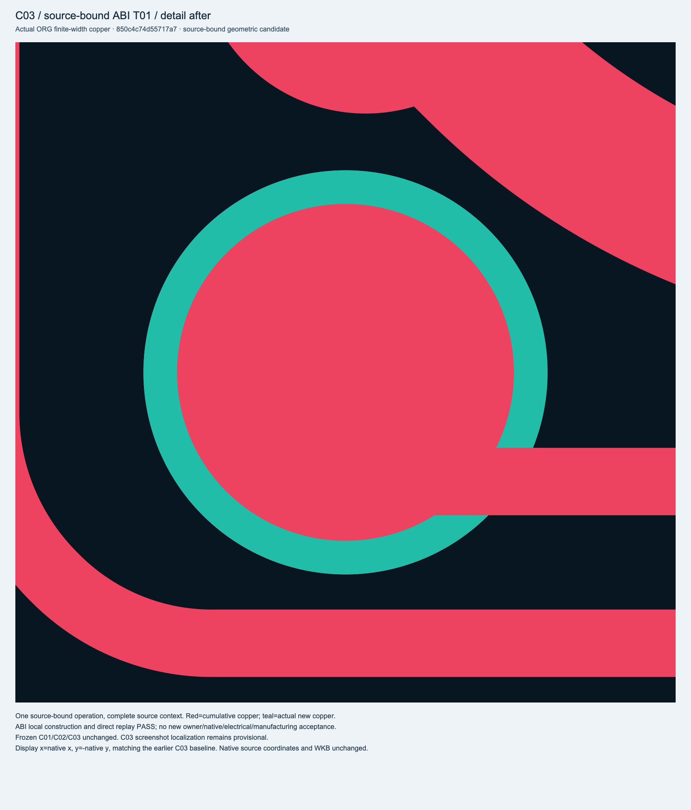
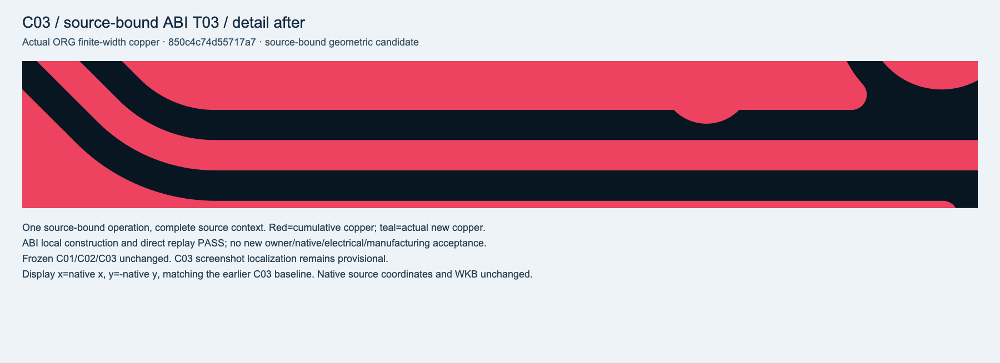
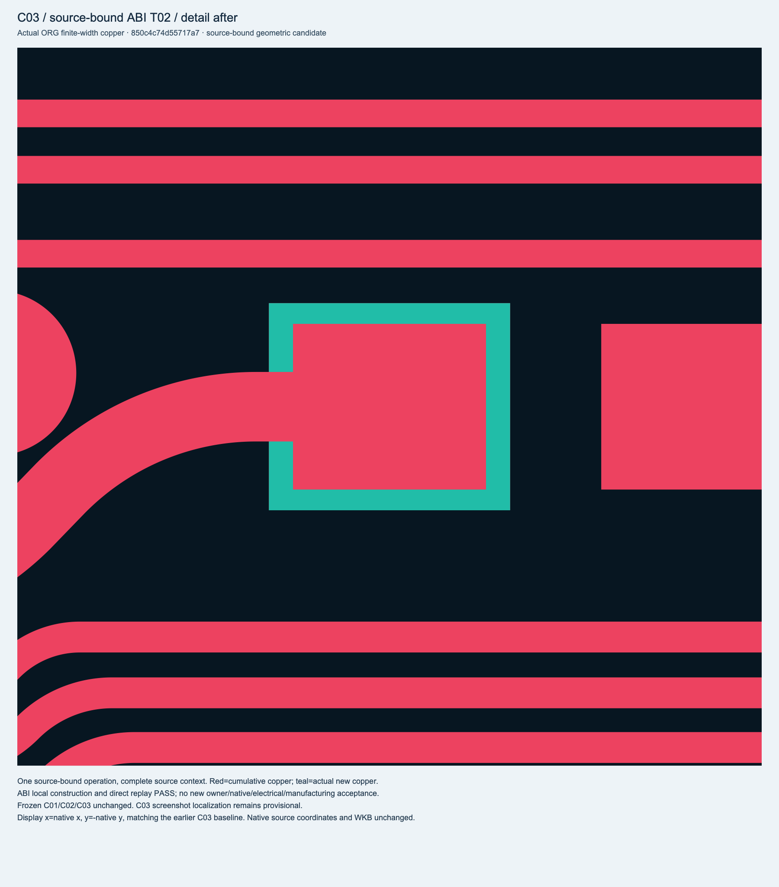
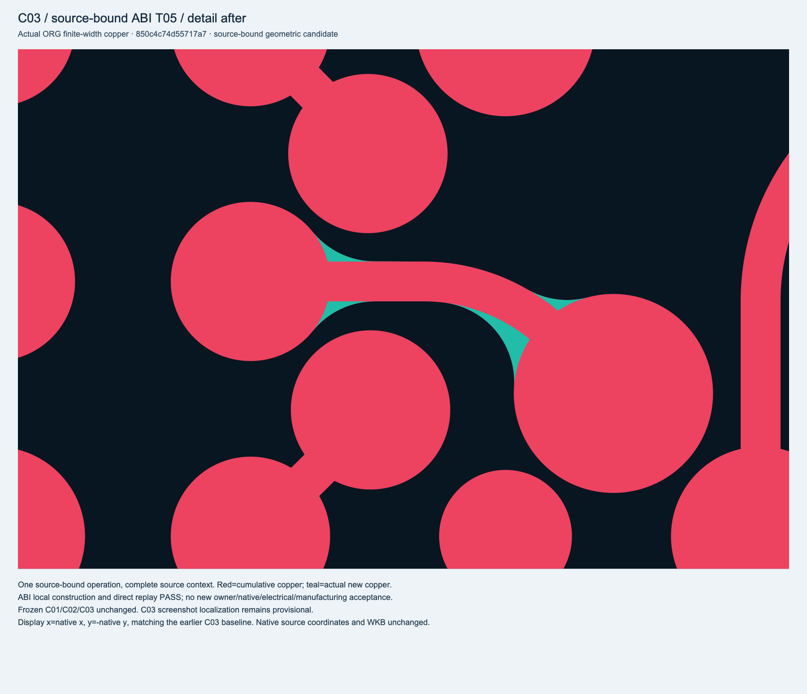

T01
Actual source; selected operation only
35 implemented JSON operations. C01/C02/C03 accepted results remain frozen. These are separate bounded ABI qualifications, not a newly accepted sequence on the board.
Actual source qualifications include 17,849 native objects. T03 native case requires no movement. The separate synthetic model demonstrates positive adaptive two-trace movement followed by T04 common-factor KEEP at 1.0 (clearance limited). Local same-assistant verification only; independent/native/electrical/manufacturing qualification remains separate.
Runtime documentation · Provenance · 313-test regression



